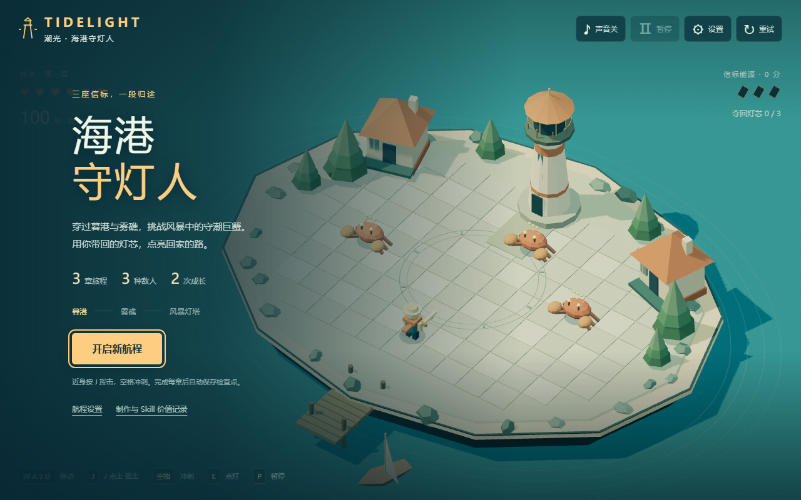

资源有结构
机械哨兵的爪口、炮口和灯室采用真实几何切割。灯塔与机械敌人可单独放大旋转，四个 GLB 均通过网格预算与封闭性检查。
放大看模型 →归档：资源接入阶段记录。最新贡献边界与未验证项见研究总览。
四个 Skill，实际复用几何构造、特效图集、声音合成和海面着色器。把资源接入同一款三章游戏，留下上一版、生成配方和验证记录。
WASD 移动 · J 挥击 · 空格冲刺 · Q 潮汐共鸣 · E 点灯

保留的是上一版完整三章游戏。场景和产品流程相同，便于检查资源、海面与战斗反馈的变化。


价值来自 Skill 携带的工具、实现和验证约束。模型设计与玩法接入仍由本项目完成，下面分清来源与新增工作。
create-3d-assets遇到的问题：场景对象只有基础几何，缺少轮廓细节和独立资产交付。
实际调用：MeshBuilder、SolidMesh 的 Manifold 布尔运算、旋转体构造、地面 AO 烘焙及网格验证。
这次产物：机械哨兵、首领、炮台、灯塔，共 4 个 GLB；每个少于 1,200 个三角形。镂空、AO 与 Y 轴向上导出可复用。
模型造型与配方由本项目编写；只有整体摆动，没有骨骼动画。导入时额外修正了顶点色的线性色彩空间。
create-vfx遇到的问题：原本只有简单粒子，缺少可辨认的强技能释放形态。
实际调用：EmitterStack 的闪光、冲击波、烟雾、余烬分层；Flipbook 导出与帧间连续性检查。
这次产物：潮汐与金色撞击两套 24 帧透明图集。游戏使用固定 14 个面片的对象池播放，与伤害事件共用触发点。
Q 的破甲、硬直、消弹是新增玩法代码；Skill 提供特效生产工具。减少动态模式改为静帧淡出。
create-sfx遇到的问题：旧版短方波只能提示“有事发生”，事件之间的材质区分较弱。
实际调用：SoundSynthesizer 的金属、玻璃、钟体模态，瞬态包络与立体声空间处理。
这次产物：10 个游戏音效与 1 个旧声对照文件。48kHz 双声道、峰值约 −3dBFS，端点归零；运行时解码后复用。
数值验证能检查格式与削波，听感需试听。旧声文件按原方波参数重建，并匹配峰值，不是旧版录音。
3d-ultra-realistic-water遇到的问题：海港背景原来是单色平面与圆环，水面缺少反光和波动。
实际调用：原配套 ocean.mjs 的 Gerstner 波、细节法线烘焙、菲涅尔反射与泡沫；小船采样同一波函数浮动。
这次产物：动态海面。根据本场景调整尺度与水位，增加独立低分辨率海面通道，保留主体画面清晰度。
比平面海面更耗性能。45% CSS 分辨率、最高 24Hz 更新；本轮未采用原示例的平面镜面反射、尾流与海洋后期。
两段均为约 −3dBFS 峰值。音色、时长和响度感受有差别，峰值相同并不等于感知响度相同。
190→45Hz，120ms；复现旧算法的命中声音。
模态共振与短促撞击，保留可辨认的金属衰减。
低频推动、金属共鸣与空气声叠加。
全程录像通过键盘和菜单从新航程完成。操作程序只读取位置与状态，不使用传送、改血或跳关接口。
游戏在浏览器运行，无需 Python。只有重新生成资源才需要下面的独立工具环境。
.runtime/asset-env/Scripts/python.exe -X utf8 asset-recipes/build_models.py
.runtime/asset-env/Scripts/python.exe -X utf8 asset-recipes/build_vfx.py
.runtime/asset-env/Scripts/python.exe -X utf8 asset-recipes/build_audio.py使用 create-vfx 的 EmitterStack 和 Flipbook，做一套青色潮汐冲击波：闪光、扩散、烟雾、余烬四阶段，24 帧、192px、透明边缘。把它接到已有 pulse 事件；不要让特效改动伤害判定。交付生成配方、图集、预览、manifest，并执行结构与动画验证。
要求写明工具、产物、接入点与验收，才能核对 Skill 到底提供了什么。
这次能够确认的是：复用了现成几何工具、特效合成器、声学函数和完整海面模块，产物已进入可玩的游戏，并可由配方重新生成。它们适合反复制作同类资源；海面模块还直接提供了可运行的专业实现。
尚未做相同需求、相同预算下“模型直接实现 / 使用 Skill”的独立实验，因此不宣称提高模型上限或节省了多少时间。造型质量、音效是否耐听和游戏是否好玩，仍需玩家判断。
来源已固定到 commit 并保存 SHA-256。asset-maker 未找到许可证声明，水面模块的再分发授权也未在本轮确认；本交付供本机评估，公开发布与商业采用前需要确认上游授权。